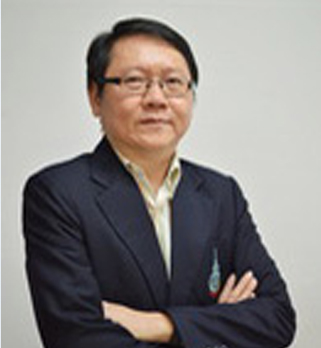
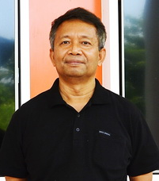

Pornchai Phukpattaranont received the B.Eng. (Hons.) and M.Eng. degrees in electrical engineering from the Prince of Songkla University, Songkhla,Thailand, in 1993 and 1997, respectively, and the Ph.D. degree in electrical and computer engineering from the University of Minnesota, Minneapolis, MN, USA, in 2004. He is currently an Associate Professor of Electrical Engineering with the Prince of Songkla University. Examples of his ongoing research include the pattern recognition system based on electromyographic signal, electrocardiographic signal, and microscopic images of breast cancer cells. His current research interests include signal and image analysis for medical applications and ultrasound signal processing. Dr. Phukpattaranont is a member of the IEEE, the ECTI Association and Thai Biomedical Engineering Research Societies.


รศ. ร.อ. ดร. วีระเชษฐ์ เกิดที่จังหวัดอุบลราชธานี
สําเร็จการศึกษามัธยมศึกษาตอนปลาย จากโรงเรียนเบ็ญจะมะมหาราช จังหวัดอุบลราชธานี ในปี พ.ศ. 2521
สําเร็จการศึกษาวิศวกรรมศาสตรบัณฑิต (วศ.บ.) และวิศวกรรมศาสตรมหาบัณฑิต (วศ.ม.) สาขา
วิศวกรรมไฟฟ้า จากสถาบันเทคโนโลยีพระจอมเกล้าเจ้าคุณทหารลาดกระบังในปีพ.ศ. 2526 และ 2532
ตามลําดับ
สําเร็จการศึกษา Doctor of Philosophy (Ph.D.) สาขาวิศวกรรมไฟฟ้า และประกาศนียบัตร The Diploma of
The Imperial College (DIC) สาขาวิชาอิเล็กทรอนิกส์กําลัง (Power Electronics) ในปีพ.ศ. 2540 และ 2541
จากอิมพีเรียลคอลเลจ วิทยาลัยแห่งวิทยาศาสตร์เทคโนโลยีและการแพทย์มหาวิทยาลัยลอนดอน (Imperial
College of Science, Technology and Medicine, University of London) สหราชอาณาจักร ในหัวข้อ
วิทยานิพนธ์ คือ การวิเคราะห์และประเมินสมรรถนะด้วยเทคนิคของพีดับเบิลยูเอ็มสําหรับอินเวอร์เตอร์ (The
Analysis and Evaluation of Pulsewidth Modulation Techniques for Inverters) ด้วยทุน
โคลัมโบจากบริติช เคาน์ซิล สหราชอาณาจักร
>> ดํารงตําแหน่งผู้ช่วยอธิการบดีฝ่ายวิชาการ สถาบันเทคโนโลยีพระจอมเกล้าเจ้าคุณทหารลาดกระบัง ระหว่างปี พ.ศ. 2541 – 2543
>> ดํารงตําแหน่งรองคณบดีฝ่ายวิชาการ บัณฑิตวิทยาลัย สถาบันเทคโนโลยีพระจอมเกล้าเจ้าคุณทหารลาดกระบังระหว่างปี พ.ศ. 2544 ถึง พ.ศ. 2547
>> เคยดํารงตําแหน่งรองอธิการบดีกํากับดูแลด้านวิชาการและวิจัย สถาบันเทคโนโลยีพระจอมเกล้าเจ้าคุณทหาร
ลาดกระบัง ระหว่างปี พ.ศ. 2548 ถึง พ.ศ. 2551 และเป็นหัวหน้าห้องปฏิบัติการความเข้ากัได้ทาง
แม่เหล็กไฟฟ้า (EMC) โครงการสํานักวิจัยการสื่อสารและเทคโนโลยีสารสนเทศ สถาบันเทคโนโลยีพระจอม
เกล้าเจ้าคุณทหารลาดกระบัง พ.ศ. 2542 ถึง พ.ศ. 2551
>> ดํารงตําแหน่งประธานคณะกรรมการวิชาการคณะที่ 890 ด้านความเข้ากันได้ทางแม่เหล็กไฟฟ้า (Electromagnetic Compatibility: EMC) สํานักงานมาตรฐานอุตสาหกรรม (สมอ.) กระทรวงอุตสาหกรรม ปีพ.ศ. 2543 - ปัจจุบัน
>> ดํารงตําแหน่งนประธานการจัดการประชุมวิชาการนานาชาติในด้านความเข้ากันไดทางแม่เหล็กไฟฟ้าและดาน
อิเล็กทรอนิกส์กําลัง
Dusit Niyato is currently a professor in the School of Computer Science and Engineering and, by courtesy, School of Physical & Mathematical Sciences, at the Nanyang Technological University, Singapore. He received B.E. from King Mongkuk’s Institute of Technology Ladkrabang (KMITL), Thailand in 1999 and Ph.D. in Electrical and Computer Engineering from the University of Manitoba, Canada in 2008. He has published more than 380 technical papers in the area of wireless and mobile networking, and is an inventor of four US and German patents. He has authored four books including "Game Theory in Wireless and Communication Networks: Theory, Models, and Applications" with Cambridge University Press. He won the Best Young Researcher Award of IEEE Communications Society (ComSoc) Asia Pacific (AP) and The 2011 IEEE Communications Society Fred W. Ellersick Prize Paper Award. Currently, he is serving as a senior editor of IEEE Wireless Communications Letter, an area editor of IEEE Transactions on Wireless Communications (Radio Management and Multiple Access), an area editor of IEEE Communications Surveys and Tutorials (Network and Service Management and Green Communication), an editor of IEEE Transactions on Communications, an associate editor of IEEE Transactions on Mobile Computing, IEEE Transactions on Vehicular Technology, and IEEE Transactions on Cognitive Communications and Networking. He was a guest editor of IEEE Journal on Selected Areas on Communications. He was a Distinguished Lecturer of the IEEE Communications Society for 2016-2017. He was named the 2017, 2018 highly cited researcher in computer science. He is a Fellow of IEEE.